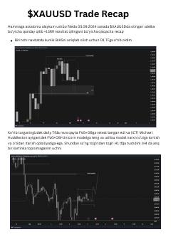

X0XAUUSD juftligida ICT metodologiyasi asosida amalga oshirilgan savdo operatsiyasining tahlili.
Ushbu qo'llanma 2024-yil 5-sentabr sanasida XAUUSD (oltin) juftligida amalga oshirilgan savdo operatsiyalarining tahlilini o'z ichiga oladi. Muallif ICT (Inner Circle Trader) metodologiyasiga asoslangan holda, bozor tahlili, orderblock va FVG modellari yordamida qanday qilib 13RR foyda olinganini bosqichma-bosqich tushuntirib beradi.